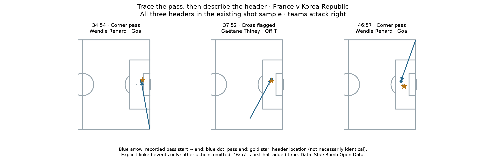

Football analyst training · Project lesson 34
Trace the event before explaining the chance.
We knew France had three headers. Now we check their recorded assisting passes instead of assuming every header came from the same type of delivery.
1. Read the actual events
- 34:54: Thiney corner delivery → Renard header goal.
- 37:52: Bussaglia pass flagged as a cross → Thiney header off target.
- 46:57: Majri corner delivery → Renard header goal. This is first-half added time.

Blue arrows show the linked passes; gold stars show header locations. Pass endpoints and shot starts are separate recorded positions, so they can differ. Other actions are omitted.
2. How did we identify the right pass?
Shot key_pass_id → pass event ID Pass assisted_shot_id → same shot ID
Think of each ID as a unique event reference. We follow the shot's reference to its pass, then check the pass points back to that shot. We also check team, half, possession and event order. This is a data join using an explicit relationship.
3. Learn a useful field distinction
We inspect pass type and play pattern too. A header after a corner pass is different from shooting directly from the corner kick.
4. Report precisely
“Both of France's scored headers followed linked corner deliveries.” That is supported here. “France had an excellent corner conversion rate” is not: we have not counted all corners. The right denominator matters.
Run 34_header_assisting_passes.py in Spyder. The linked_pass() function follows the recorded IDs. A missing link stays unresolved; it does not guess the nearest previous pass.
Your analyst task: state the verified pattern, one limitation and a video question about Renard's movement or defensive marking. Ask your teacher for feedback. No video has been reviewed, and event locations cannot show movement between events.
Example brief
“Renard's two header goals followed directly linked corner deliveries. This does not measure corner efficiency because we have not counted all corner attempts. I would review video to examine her movement and the marking on those deliveries.”